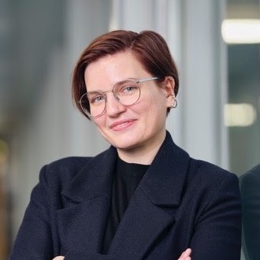

Physicist — Quantum × AI
Eliška Greplová.
I build intelligent machines to make quantum hardware more powerful.

Selected work
- 2026 Weight-four parity checks in a spin-shuttling architecture Nature 655, 1160 · B. Undseth, N. Meggiato, Y.-H. Wu et al. With the Vandersypen lab
- 2026 Cross-Platform Autonomous Control of Minimal Kitaev Chains PRX Intelligence 1, 013005 · D. van Driel, R. Koch, V. P. M. Sietses et al. With the Kouwenhoven, Goswami, Wimmer and Lado labs
- 2025 Machine Learning in Quantum Sciences Book · Cambridge University Press
- 2025 Delft Charge Stability Dataset Open dataset · ~10k diagrams
- 2020 Automated tuning of double quantum dots into specific charge states using neural networks Physical Review Applied 13, 054019 · R. Durrer, B. Kratochwil, J. V. Koski et al. With the Ensslin and Ihn labs
About
- Assoc. Prof. TU Delft · Kavli Institute of Nanoscience & QuTech Head of the QMAI Lab
- Visiting Microsoft Research AI4Science, Amsterdam
- Postdoc ETH Zurich With Sebastian Huber
- PhD Aarhus University With Klaus Mølmer
- MSc Max Planck Institute of Quantum Optics, Munich With Ignacio Cirac
- BSc Czech Technical University in Prague With Igor Jex
Outside of science I read, lift and play ice-hockey.
Contact